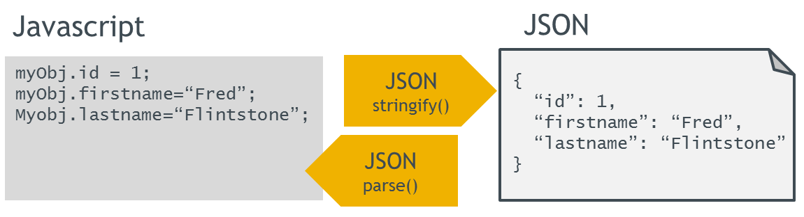
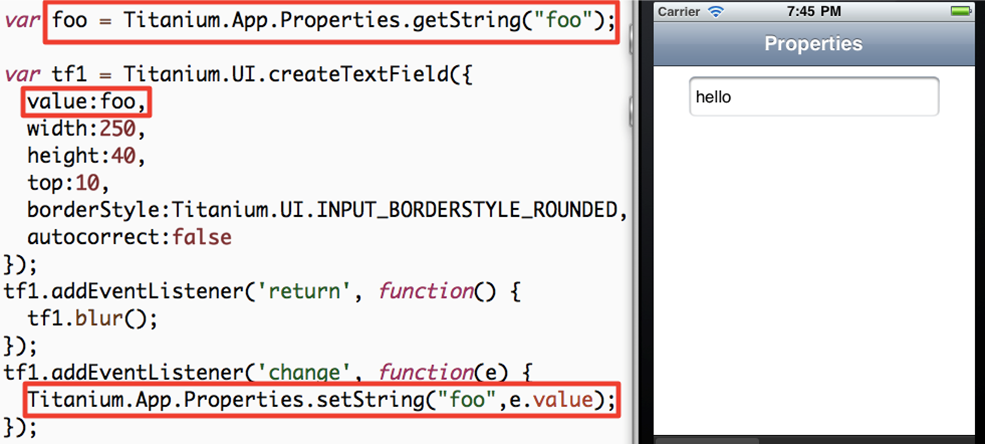
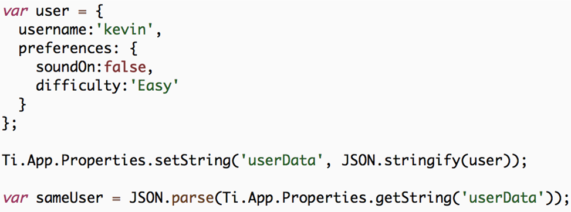
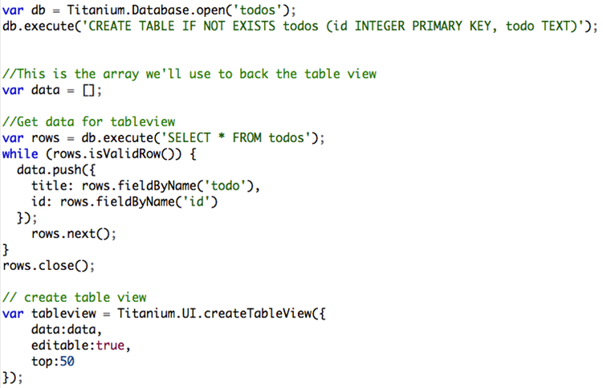
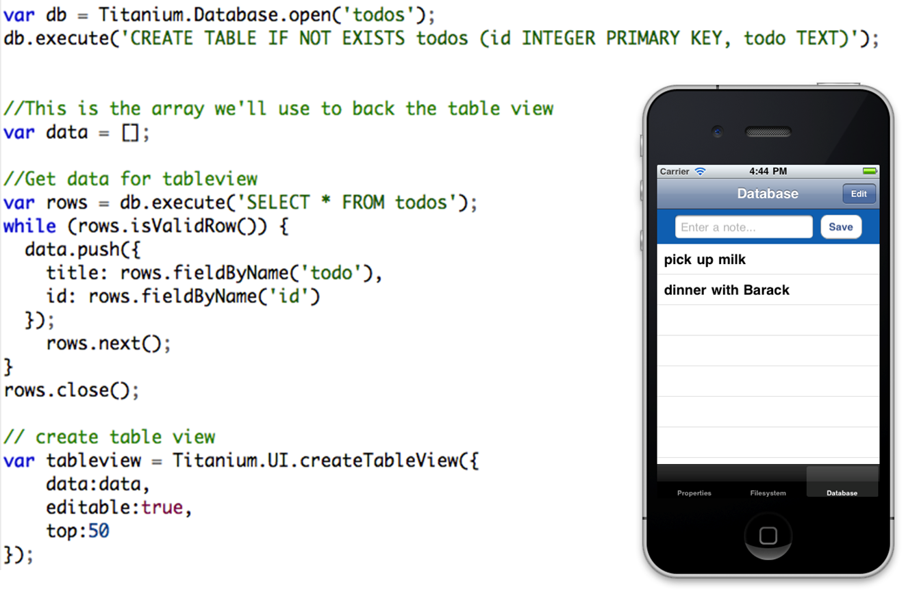

Working With Local Data
Building Native Mobile Apps With Titanium
AGENDA
- Understand the different mechanisms for persistence in Titanium Mobile
- Learn the basics of the SQLite database engine
- Learn how to use the Properties API to store configuration and JavaScript objects
- Use persistent data to back user interface elements
Local Data Persistence methods
SQLite Database
Properties API
Lots of structured data === Database
Configuration or less than 20 objects === Properties
Images, binary data - don't use blobs if you can avoid it
Properties API
Lightweight Key/Value Store
Best suited for light persistence needs (configuration options, saved application state)
Coupled with JSON, can be used to store complex JavaScript objects
JSON = JavaScript Object Notation
Language-independent text-based means to represent arrays and objects (without methods)
Compact data format, efficient over slow networks
Standardized and widely supported, see json.org

Skip if students are familiar with topic
Demo: String Properties

- Launch in Developer and demo app
- Enter data and quit
- Fully quit app
- Re-open to demonstrate persistence
- Open Resources/properties.js
- Ti.App.Properties.getString() and mention data types
- createTextField()
- Change event listener, setString()
Code review:
Simple Object Storage

Example user object
Save to userData property via JSON.stringify()
Reconstitute using JSON.parse()
Database API
Each platform features and embedded SQLite database
Best used for large amounts of structured data
You can use a pre-populated SQLite database file using Ti.Database.install
Interact with the DB using standard SQL statements
Demo: Persistence app
- Open app, switch to Database tab
- Add an entry
- Click row, alert shows row index
- Click Edit, click delete button, click Delete
Don't do the code review here, next slides
Persistence - Database demo

- Open Resources/app.js and explain basic app structure
- Open database.js
- Grab reference to database with open()
- Create table if it doesn't exist
- Very brief on views/buttons for entry
- Retrieving data from DB and building the table row data
- rows.next() critical, moves cursor to next record
- rows.close() important for memory optimization
better to open and close than to leave open - Creating table, point out editable: true
- Event handler on table for alert()
- Event handler for delete
- Event for adding new row to table
should use db.lastInsertRowID property instead
Persistence - Database demo

Code walkthrough:
- Open Resources/app.js and explain basic app structure
- Open database.js
- Grab reference to database with open()
- Create table if it doesn't exist
- Very brief on views/buttons for entry
- Retrieving data from DB and building the table row data
- rows.next() critical, moves cursor to next record
- rows.close() important for memory optimization
better to open and close than to leave open - Creating table, point out editable: true
- Event handler on table for alert()
- Event handler for delete
- Event for adding new row to table
should use db.lastInsertRowID property instead
SQLite Data Types
Small number of built-in data types
Text, Integer, Real, Blob
Need to represent other data types within these primitives
Integer 0 or 1
Timestamp as text
But 'under the hood' the various field types are mapped to the four shown here
Q&A
Lab Goals
Back our TiBountyHunter application with live data from a SQL database
Requirements:
- CRUD operations on our fugitive database
- Adding behavior to our detail and add windows
wiki.appcelerator.org/display/td/250+Working+With+Local+Data
Demo app
- Add a fugitive or two
- Click to show details, capture (boolean switch)
- Switch to Captured tab and there's the fugitive
- Delete the scoundrel and he's gone from the table
Solution Walkthrough
app.js
- new included file
- DB open, create table, and close statements
- list()
- ternary operator
- add() - not application level event
- delete()
- bust()